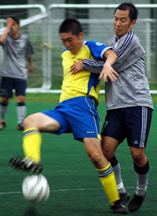

|
Hachioji Park, Saturday 23rd August,
They say to be champions of the TML you have to be able to win ugly, and this has been proved year-in-year-out by the aesthetically challenged players of the previous 5 TML championship winning teams (with the exception of John Day, who as everyone knows is dead gorgeous). If this is the case this season, the best the Geckoes and YCAC can expect is to end up towards upper mid-table, with both teams seeming more than happy to draw prettily.
As with any game in mid-August in Japan, the Geckoes and YCAC came expecting a sweat-fest, and as such new Geckoes gaffer Brommy had spent all week trying to assemble his slimmest possible 11. However, on the day the weather turned out to be more akin to a night of passion with out-going, self-styled Geckoes manager/legend, Rob Manager – a bit windy and more than a little bit damp. As fate would have it, Geckoes regular and slim GK Goro was unavailable and as such out-going, self-styled Geckoes manager/legend Rob Manager got a late call for the game and started in goal for the Geckoes. This meant new gaffer Brommy not only had Rob's big manager shorts to fill, but he also had to do it under the hungry eye of the TML's first ever Director of Football (DOF), Rob Doffer.
The game itself started with both teams struggling to get a grip on things. It was very much back-and-forth, forth-and-back stuff. I think that one team definitely had a shot which was saved, and then another team made a couple of nice tackles. Everything was played in the right spirit, with Ref Jorge also playing his part in letting the game flow freely. Finally the game and indeed the new TML Season 6 kicked into life after about 25 minutes when a corner was expertly turned in at the Geckoes near-post by the YMCA’s new room-mate, number 9 (Matt Wallace).
1-0 YCAC.
And that was basically the first half done and dusted, except for a long-range effort from the Geckoes which hit the YCAC crossbar and bounced agonisingly over the head of on-rushing striker, Paul James.
 The second half was started expertly by Jorge using his whistle. The Geckoes in particular seemed up for the second half and gradually tried to take control of the game. Jon Smith, Kai, Masa and Kaz played some lovely two-touch football for the Geckoes, but the team as a whole lacked the necessary penetration to actually put the ball in the back of the net. They certainly had the majority of position and corner after corner was fired into the YCAC box, but each time their defense expertly protected their goal and the game seemed destined for a 1-0 result. It certainly wasn’t all one-way stuff and when the YMCA were able to get their feet on the ball (and with Joe Takeda in particular exerting his influence) they also played some very nice football.
The second half was started expertly by Jorge using his whistle. The Geckoes in particular seemed up for the second half and gradually tried to take control of the game. Jon Smith, Kai, Masa and Kaz played some lovely two-touch football for the Geckoes, but the team as a whole lacked the necessary penetration to actually put the ball in the back of the net. They certainly had the majority of position and corner after corner was fired into the YCAC box, but each time their defense expertly protected their goal and the game seemed destined for a 1-0 result. It certainly wasn’t all one-way stuff and when the YMCA were able to get their feet on the ball (and with Joe Takeda in particular exerting his influence) they also played some very nice football.
With 10 minutes to go the Geckoes fired in their 35th corner of the game and after a goal mouth scramble, mustachioed Geckoes right-back Nat Pemberton deflected the ball into captain Jon Smith’s path, and Jon managed to twat the ball back into the net.
Goal - 1-1.
This seemed to re-ignite the fire of the YCAC, and they came back strongly, hitting the crossbar with an ambitious shot from one of their impressive forwards. However, save for a couple of near misses from the Geckoes, this was to be the last major action-point of the game, and things were bought to a close with the scores all square.
All in all, a nice start to the season for all concerned. However, as everyone knows nice guys don’t come first and so both teams will need to improve (and probably bring in a couple of players who can get down and dirty) if they are to be at the right end of the TML League 1 and the wrong end of the beauty contest at the end of the season.
Report by Simon Bromwell
|